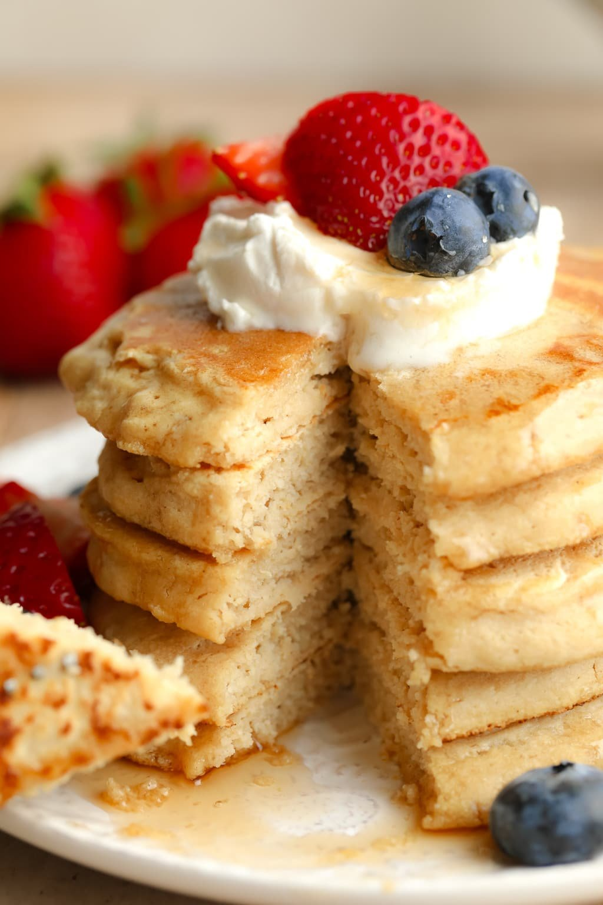

Oat Flour Pancakes

Those oat flour pancakes are a great healthier version of the popular dish and their taste is unbelievable!
Ingredients:
- 3 cups oat flour
- 1 tablespoon baking powder
- 1/2 teaspoon salt
- 2 cups oat milk or other plant milk
- 1 tablespoon apple cider vinegar
- 3 tablespoons pure maple syrup
- 1 teaspoon pure vanilla extract
Instructions:
- In a large bowl, stir together the oat flour, baking powder and salt.
- Pour the milk, vinegar, maple syrup and vanilla into the bowl with the dry ingredients. Stir with a large spoon until just combined, but do not over mix or the pancakes will be dense. A few lumps are okay. If it's really thick, add a little water and stir. Oat flour can soak up liquid as it sits, so you may need to add a little water as you go.
- Heat a large griddle or pan over medium-high heat. Grease the pan with vegan butter or a neutral flavored oil, and drop about 1/3 cup of batter on it. Cook until bubbles form, then flip and cook for another minute or so, until golden brown. Repeat with the remaining batter.
- Serve with maple syrup, vegan butter and fresh fruit.